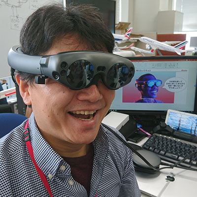
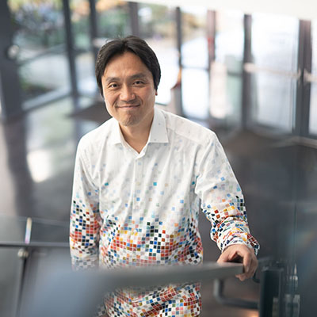

MagicLeapで作り上げるXR世界とは！？
講演情報
| 資料公開予定 | 予定なし |
|---|---|
| スクリーンショット撮影可否 | 可 |
| SNS投稿可否 | 可 |
講演概要
NTTドコモでは2020年6月からMagicLeap社のMagicLeap1の発売を開始いたしました。MagicLeapは非常に創り込まれたMRグラスであり、皆様にMRの世界を提供出来るデバイスとして世に送り出されたデバイスです。MagicLeap社の開発担当者の開発秘話や、NTTドコモとパートナー企業で共同開発してきたコンテンツの紹介、及びそれらの開発苦労話などをご紹介いたします。
講演者詳細
-

株式会社NTTドコモのR&Dでビッグデータチームの立ち上げや,米国西海岸でテクノロジスカウティングなどを経験。現在はイノベーション統括部にてAI/機械学習やクラウドに関連するサービスやソリューションに関連する開発や開拓に従事し、パブリッククラウド戦略や、Project:SEBASTIEN(AIエージェントAPI)のプロジェクトリード、MagicLeapやVR端末を扱うxR戦略、5Gの民主化を謳う5Gイノベーションなどを担当。
-

ミシガン州にあるクランブルック・アカデミー３Dデザイン学科を修士で卒業。アップル社 Macintosh SEのデザインを手掛けた事でも知られる シリコンバレーに拠点を持つFrog Design でインダストリアル・デザイナーとしてのキャリアを始める。その後ニューヨークに活動の場を移し、ハーマンミラー社のデザインも手掛けるECCO DesignにてVPを務めたのち、2013年にMagic Leapに参加するためにフロリダへ移動。初期メンバーとして工業デザインの責任者に就任、人間の頭部の形状など人間工学的な視点を重視しながら人に優しいMagic Leap 1のデザインを造り上げる。現在も後継機種のデザインの完成に向けてシニアVPとしてインダストリアル・デザイナーとヒューマンファクターのチームを率いる。